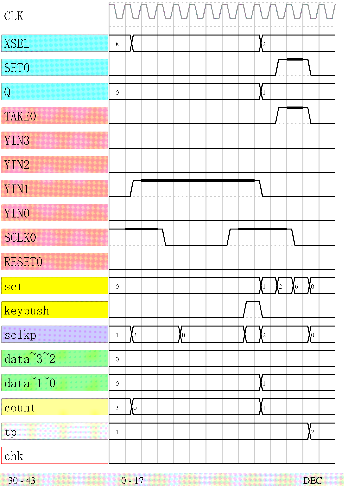

リスト99 の tp はキーを押した回数を示しています。 takep を計数していますが takep は node_TAKE が1になったときに1CLK だけ1 になります。 tp の値によってどのキーを押すべきかが決まります。
if (node_RESET) takep=0; else switch(takep) case 0: if (node_TAKE) takep=1; endif case 1: takep=2; case 2: if (node_TAKE) takep=takep; else takep=0; endif endswitch endif if (node_RESET) tp=0; else if (takep==1) tp=tp+1; else tp=tp; endif endif